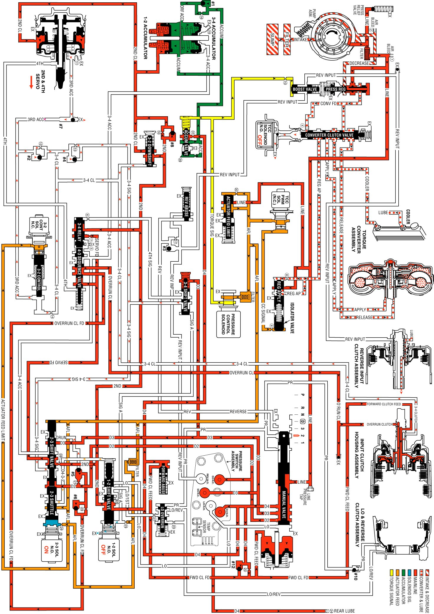

Manual Second Gear
Manual Second Gear
A manual 3-2 downshift can be accomplished by moving the gear selector lever into the Manual Second (2) position when the transmission is operating in third gear. This causes the transmission to shift immediately into second gear regardless of vehicle operating conditions. Also, the transmission is prevented from operating in any other gear, first, third or fourth. The following information explains the additional changes during a manual 3-2 downshift, as compared to a forced 3-2 downshift. Some vehicles in manual second gear will start out in first gear, while other vehicles will have a second gear start. Refer to the owners manual for specific applications.
Manual Valve
The selector lever moves the manual shaft and the manual valve into the manual second (2) position. This allows the line pressure to enter the D2 fluid circuit.
Transmission Fluid Pressure (TFP) Manual Valve Position Switch Assembly
The D2 fluid is routed to the TFP manual valve position switch where it opens the normally closed D2 fluid pressure switch. With the D2 and the D3 pressure switches closed and the D4 pressure switch open, the TFP manual valve position switch signals the PCM that the transmission is operating in manual second.
Third and Fourth Gears Prevented
2-3 Shift Solenoid (SS) Valve
The PCM energizes the 2-3 SS valve and the AFL fluid pressure holds the 2-3 shift valve in the downshift position. This electronically prevents operation of the third and fourth gears.
2-3 Shift Valve Train
The D2 fluid is routed between the 2-3 shuttle and the 2-3 shift valves and causes the following:
^ Regardless of the operating conditions, the D2 fluid pressure holds the 2-3 shift valve in the downshift position against the AFL fluid pressure.
^ The 2nd fluid is blocked from entering the 3-4 signal fluid circuit and the 3-4 signal fluid circuit is open to an exhaust port at the valve.
^ The 3-4 clutch cannot apply with the 3-4 signal fluid exhausted. Therefore, third and fourth gears are hydraulically prevented.
^ The 2nd fluid feeds the servo feed fluid circuit, but the 2nd fluid circuit has no function in manual second.
^ The AFL fluid is blocked by the 2-3 shift valve and the D432 fluid circuit is exhausted through the valve.
^ The overrun fluid is exhausted through the 2-3 shuttle valve.
1-2 Shift Valve
The 1-2 SS valve is OFF, the signal A fluid exhausts through the solenoid and the spring force holds the valve in the upshifted position.
First Gear Prevented
The prevention of first gear is controlled electronically by the PCM through the 1-2 SS valve. The PCM keeps the 1-2 SS valve de-energized, regardless of the vehicle operating conditions when the TFP manual valve position switch signals manual second gear range. This keeps signal A fluid exhausted and the spring force holds the 1-2 shift valve in the upshift position.
Overrun Clutch Remains Applied
Overrun Clutch Feed Checkball (#5)
Orificed D2 fluid pressure seats the #5 checkball against the empty overrun clutch fluid circuit. This is done simultaneously with the overrun clutch fluid exhausting so that there is a continuous fluid supply to the overrun clutch feed fluid circuit.
Overrun Clutch Piston
A continuous supply of fluid pressure is routed to the piston in order to keep the overrun clutch plates applied.
Torque Converter Clutch
The converter clutch is released prior to downshifting into manual second-second gear. Under normal operating conditions, the TCC will not apply in second gear.
Pressure Control (PC) Solenoid Valve
Important: Some vehicles in Manual Second Gear, at a stop, will start out in 1st gear, while others will have a second gear start. Refer to Vehicle Owners Manual.
The PCM output signal to the PC solenoid valve increases the operating range of torque signal fluid pressure in manual second. This provides the increased line pressure for the additional torque requirements during the engine compression braking and increased engine loads.
Manual Second Gear
Manual Second Gear:
